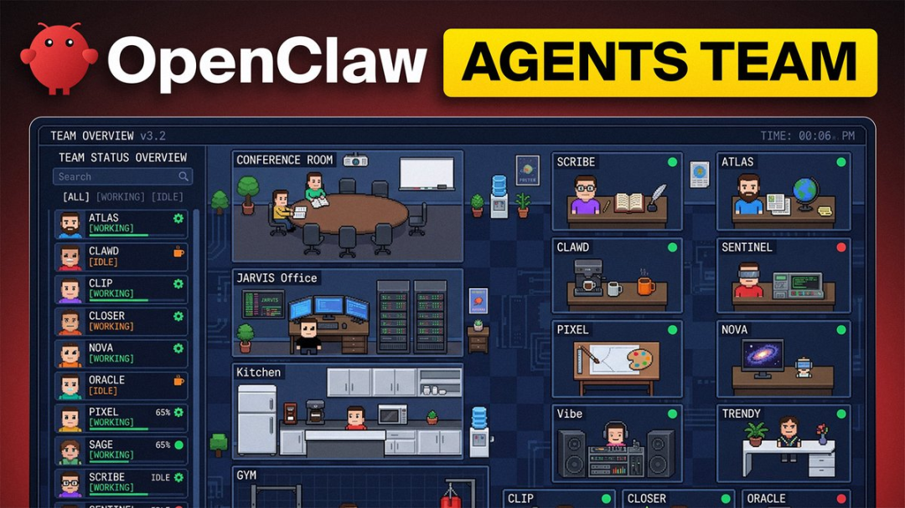
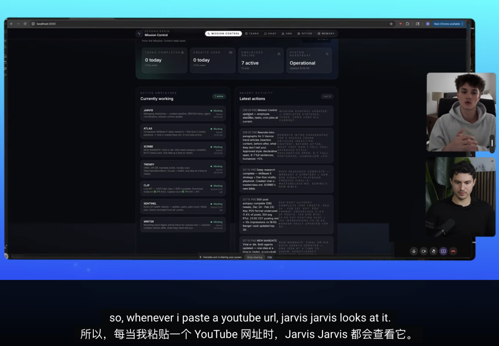
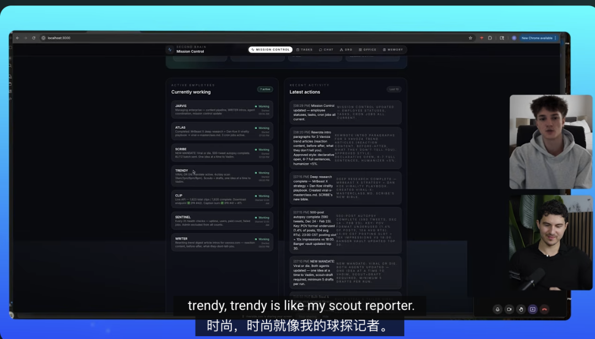
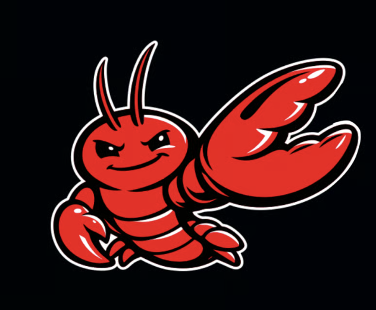
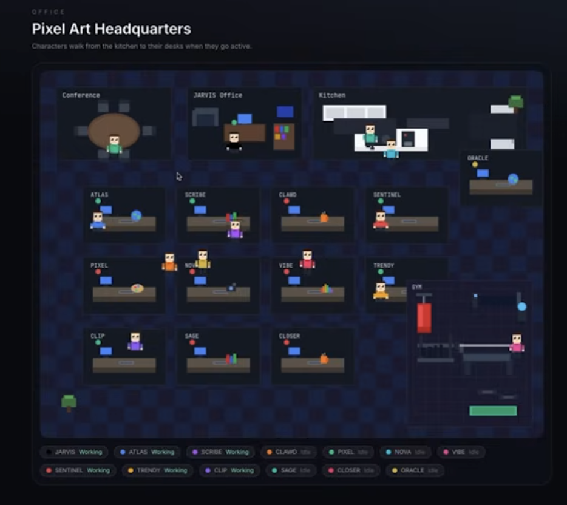
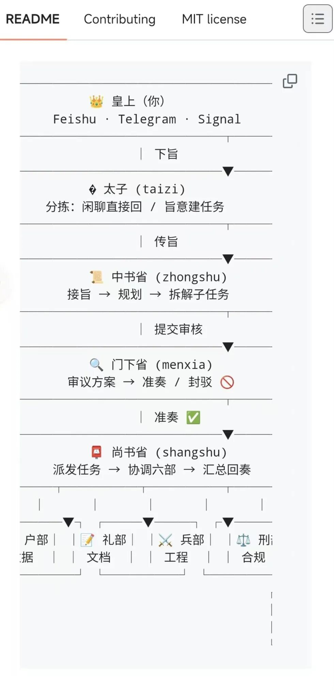
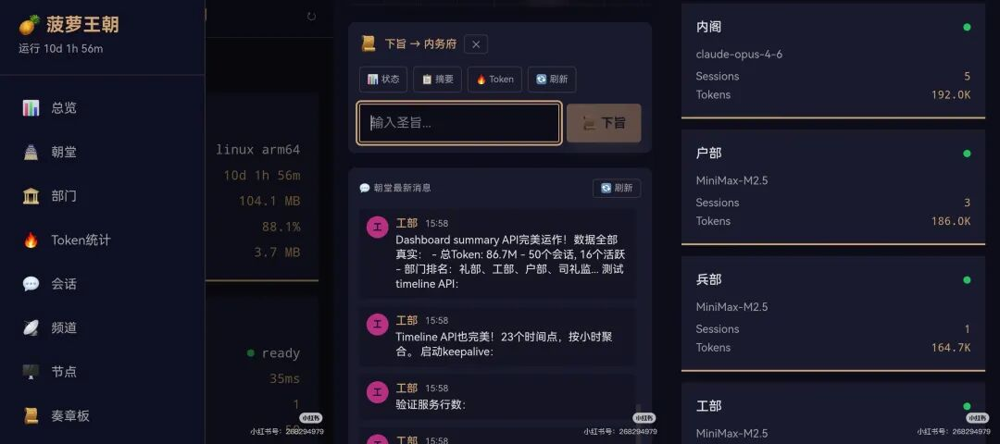

闻乐 发自 凹非寺
量子位 | 公众号 QbitAI
高中毕业不上大学，没学过一行代码，靠一群 开起了公司。
开起了公司。
每月运营成本400美元，攒下了450+付费用户。
现在的虾法真是越来越好玩了。

这家全龙虾公司，没有一个真人打工人，却有真人公司的完整组织架构。
设计、开发、研究、内容、运营部门一个不落，每只龙虾各司其职，主打一个专业高效。
写代码、审Bug、抓X平台热点、剪辑视频、写Reddit营销贴，甚至做深度行业研究、出商业策略手册……这些原本需要专业人士熬夜硬肝的活儿，这群龙虾员工全能干。
咱就是说，小成本创业真被养虾人玩明白了。
全龙虾公司
肯定有人好奇，400美元花在哪——
250美元拿下Claude Max订阅，剩下150美元充各类API调用额度。
6个核心龙虾用Claude保证质量，其余的全选低成本API控制开支，主打一个把钱花在刀刃上。
当然了，在这400美元之前，小哥先搞了一台16GB+512GB的Mac Mini来运行OpenClaw环境。

接下来说说这家营销公司是怎么运转的。
首先是总调度贾维斯，妥妥的团队大脑。
贾维斯基于Opus 4.6，通过Claude Max OAuth运行，能自动把不同任务精准派给对应的AI，全程不用人工插手。
比如，检测到YouTube URL，直接转给视频剪辑AI；出了深度研究报告，第一时间分配给内容创作AI……在贾维斯的统筹下，各个部门的龙虾员工按部就班，各展所长。

研究部门的Atlas是团队的信息雷达，靠着Brave Search、X API、FireCrawl等多种API每小时扫一遍全网做深度研究，把碎片化信息整合成行业报告。
内容部门有文案撰写员Scribe和潮流侦察员Trendy组成的黄金搭档。
Scribe基于GLM 5，严格跟着Atlas的研究成果走，每3小时产出一篇优质文章；
Trendy则是热点捕手，每2小时扫一遍X、Reddit等平台的热门趋势，把流量风口及时反馈给Scribe，让内容创作紧跟热点。

设计部门则承包了公司所有视觉需求，从静态图像到动态视频，从平面设计到动画内容，全有专门的AI负责。
图片设计基于Nano Banana Pro，视频制作靠Higgsfield等工具，还有动态设计，结合Claude Code做动态图形和动画。
技术开发和质量保障这块，靠Clawed和Sentinel保驾护航。
高级开发人员Clawed每天晚上11点自动审查代码库，还会提交优化请求。
而且它能在Claude Code里并行启动多个AI，分工协作处理开发任务。
Sentinel质检员每2小时对Clawed的请求做二次审查，实时监控代码漏洞，一边开发一边校验。
增长部门由Atlas和Scribe联手搞定，Atlas通过深度研究挖掘Reddit等平台用户的真实需求，找准痛点和兴趣点，Scribe再根据这些需求写针对性的营销贴和种草内容，精准触达目标用户。
运营方面则有Clipper和Ryder两位得力干将，Clipper专门负责视频剪辑和发布排期，把做好的视频按平台规则优化，再制定合理的发布计划，实现多平台分发；
Ryder则是创始人的私人助理，处理日常工作琐事，让老板只管战略，不用操心杂事。
这么一套下来，这个零真人员工的公司就可以24小时不停运转，接单赚钱了。
创始人0代码基础
打造出这套高效AI协作体系的创业者，不仅是个刚毕业的高中生，还完全没学过代码。
在开始创办这家公司之前，他甚至不知道什么是GitHub、什么是IDE，甚至不知道什么是终端。
当时对AP 的全部认知也仅限于“它是调用另一个端点的某种东西”。
一切的一切，只是因为刷油管时看到了那只虾……

那他怎么指挥这个龙虾军团呢？
最重要的还是提示词。
对于零代码创业者来说，提示词就是和AI沟通的专属语言。
虽然不会写代码，但你肯定会下命令吧（doge）。
这位创业者靠着大量提示词头脑风暴，给每个AI制定了精准详细的工作指令，明确了工作标准、输出要求和协作逻辑，让AI能精准理解并执行任务；
他还自建了一个可视化任务控制中心，就像一个AI办公室一样，让整个AI团队的工作流程一目了然。
通过这个控制中心，他能实时监控任务推进情况，随时根据业务需求调整指令。

当被问到是否会扩大公司规模时，这位小哥直言：
未来我不需要雇佣真正的开发人员，我只想雇那些“拥有自己AI团队”的高效管理者。
意思是以后创业养一池子龙虾就能躺赚吗……
One More Thing
有人当龙虾老板，也有不少人嘛……


话说，你的龙虾军团组到第几只了？
参考链接：
[1]https://x.com/Jacobsklug/status/2029550513747112377
[2]https://www.youtube.com/watch?v=4HyNQe6UI_c
一键三连「点赞」「转发」「小心心」
欢迎在评论区留下你的想法！
— 完 —
🦞 今天，你养虾了吗？
欢迎加入【龙虾养成讨论组】，一起交流养虾经验！扫码添加小助手加入社群，记得备注【OPENCLAW】哦～